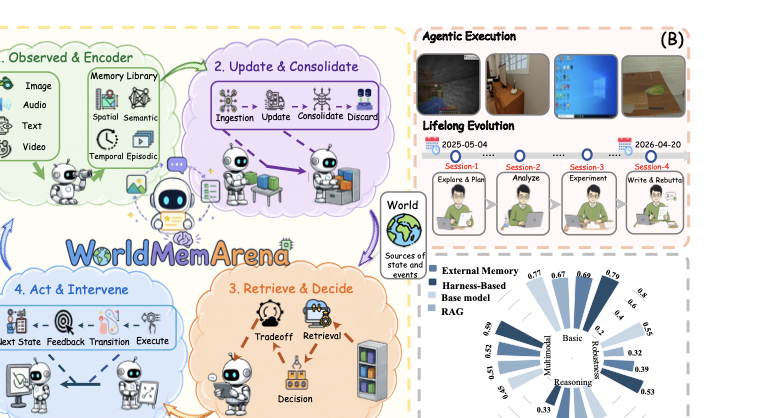
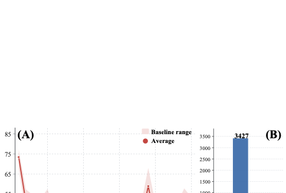
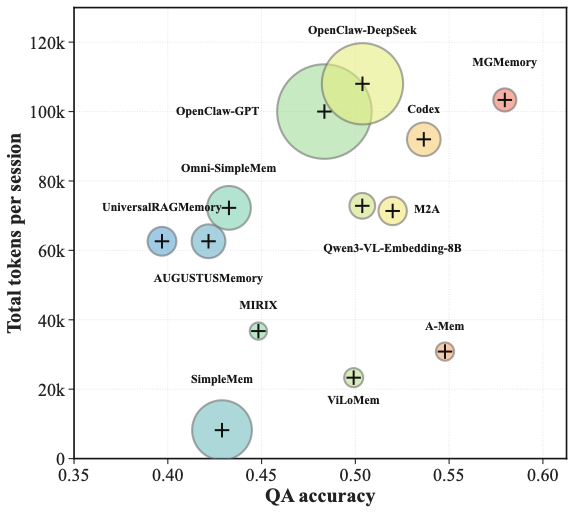

Action–World Loop
Each step couples observation, action, environment feedback, and memory — so memory is evaluated as a process, not a snapshot.
Memory must do more than recall. It must track an evolving world, revise what has gone stale, and surface the right evidence at decision time. WorldMemArena reframes agent memory as a four-stage lifecycle — write, maintain, retrieve, use — across 400 multi-session multimodal tasks.
Existing benchmarks collapse memory into a single end-of-task accuracy and reduce visual observations to captions, hiding where failures actually occur. WorldMemArena reframes memory as an observable lifecycle across realistic agent interaction.
Each step couples observation, action, environment feedback, and memory — so memory is evaluated as a process, not a snapshot.
Four stages — write, maintain, retrieve, use — annotated with gold memory points, updates, distractors, and evidence chains.
Lifelong Evolution tracks evolving personal & task states. Agentic Execution grounds memory in real trajectories.
First unified comparison of long-context, RAG, external memory, and harness-based memory agents under one protocol.
At each step the agent observes a partially visible world, takes an action, receives feedback, and updates memory to support future decisions. Hover the nodes to see what each stage evaluates.
Identify future-useful evidence from observations, actions, screenshots, and feedback.
Revise stale facts, remove outdated entries, preserve a consistent world state over time.
Surface the right evidence — by decision relevance, not just semantic similarity.
Faithfully use retrieved evidence to answer queries or take environment actions.

Lifelong Evolution focuses on evolving personal & project state. Agentic Execution places memory inside real GUI, embodied, and visual-agent trajectories — where evidence is distributed across actions, screenshots, and feedback.
Hidden world states evolve across sessions; the system must consolidate, revise, and re-use long-term memory.
Real agent trajectories where memory must be built from observations, tool feedback, and screenshots, not narration.
Pivot between domains, compare modality pressure, retrieval pressure, and inspect representative traces.
Open Explorer
A unified comparison of long-context, manually designed memory systems, and harness-based agents surfaces four consistent patterns.
High memory recall does not translate to QA correctness. Retrieval, not capacity, is the dominant bottleneck.
Most systems compress visual evidence into captions and lose spatial, temporal, and procedural detail.
Performance degrades sharply on real GUI and embodied trajectories where evidence is distributed across actions.
Harness-based memory adapts better in hard regimes but remains expensive and less stable across backbones.


Inspect domain composition, modality pressure, retrieval pressure, and representative traces in the interactive explorer — or jump straight to the dataset.